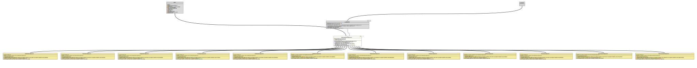

Class DimensionedValueStringConverter<D extends Dimension,V extends DimensionedValue<D>>
java.lang.Object
org.tquadrat.foundation.value.api.DimensionedValueStringConverter<D,V>
- Type Parameters:
D- The type for the dimension.V- The type for the dimensioned value.
- All Implemented Interfaces:
Serializable,StringConverter<V>
- Direct Known Subclasses:
AreaValueStringConverter,DataSizeValueStringConverter,EnergyValueStringConverter,ForceValueStringConverter,LengthValueStringConverter,MassValueStringConverter,PowerValueStringConverter,PressureValueStringConverter,SpeedValueStringConverter,TemperatureValueStringConverter,TimeValueStringConverter,VolumeValueStringConverter
@ClassVersion(sourceVersion="$Id: DimensionedValueStringConverter.java 1105 2024-02-28 12:58:46Z tquadrat $")
@API(status=STABLE,
since="0.1.0")
public abstract class DimensionedValueStringConverter<D extends Dimension,V extends DimensionedValue<D>>
extends Object
implements StringConverter<V>
The abstract base class for implementations of
The String representations for all dimensioned values have the same format: a numeric part followed by the unit for the dimension, separated by whitespace (one or more blanks). For example:
StringConverter
for dimensioned values. The String representations for all dimensioned values have the same format: a numeric part followed by the unit for the dimension, separated by whitespace (one or more blanks). For example:
15 m or
16.0 t.- Author:
- Thomas Thrien (thomas.thrien@tquadrat.org)
- Version:
- $Id: DimensionedValueStringConverter.java 1105 2024-02-28 12:58:46Z tquadrat $
- Since:
- 0.1.0
- See Also:
- UML Diagram
-

UML Diagram for "org.tquadrat.foundation.value.api.DimensionedValueStringConverter"
{kind=link}
-
Field Summary
FieldsModifier and TypeFieldDescriptionThe subject class for this converter.static final StringThe error message for an invalid value "\'%s\' cannot be parsed as a dimensioned value".Fields inherited from interface org.tquadrat.foundation.lang.StringConverter
METHOD_NAME_GetSubjectClass, METHOD_NAME_Provider -
Constructor Summary
ConstructorsModifierConstructorDescriptionprotectedDimensionedValueStringConverter(Class<V> subjectClass) Creates a new instance ofDimensionedValueStringConverter. -
Method Summary
Modifier and TypeMethodDescriptionprotected abstract VcreateValue(BigDecimal number, D dimension) Creates an instance ofDimensionedValuefrom the given arguments.final VfromString(CharSequence source) final Collection<Class<V>> Provides the subject class for this converter.Returns a String representation of given value.
The precision is applied to the numerical part only.protected abstract DunitFromSymbol(String symbol) Determines the unit instance from the given unit symbol.
-
Field Details
-
MSG_InvalidValue
The error message for an invalid value "\'%s\' cannot be parsed as a dimensioned value".- See Also:
-
m_SubjectClass
The subject class for this converter.
-
-
Constructor Details
-
DimensionedValueStringConverter
Creates a new instance ofDimensionedValueStringConverter.- Parameters:
subjectClass- The subject class.
-
-
Method Details
-
createValue
Creates an instance ofDimensionedValuefrom the given arguments.- Parameters:
number- The value.dimension- The dimension.- Returns:
- The dimensioned value.
-
fromString
- Specified by:
fromStringin interfaceStringConverter<D extends Dimension>- Throws:
IllegalArgumentException
-
getSubjectClass
Provides the subject class for this converter.- Returns:
- The subject class.
-
toString
- Specified by:
toStringin interfaceStringConverter<D extends Dimension>
-
toString
Returns a String representation of given value.
The precision is applied to the numerical part only. The width includes the unit symbol, too.- Parameters:
source- The object to convert; can benull.width- The minimum number of characters to be written to the output. If the length of the converted value is less than the width then the output will be padded by ' ' until the total number of characters equals width. The padding is at the beginning, as numerical values are usually right justified. Ifwidthis -1 then there is no minimum.precision- – The number of digits for the mantissa of the value. Ifprecisionis -1 then there is no explicit limit on the size of the mantissa.- Returns:
- The String representation for this value.
-
unitFromSymbol
Determines the unit instance from the given unit symbol.- Parameters:
symbol- The unit symbol.- Returns:
- The unit instance.
- Throws:
IllegalArgumentException- The given unit symbol is unknown for the respective dimension.
-